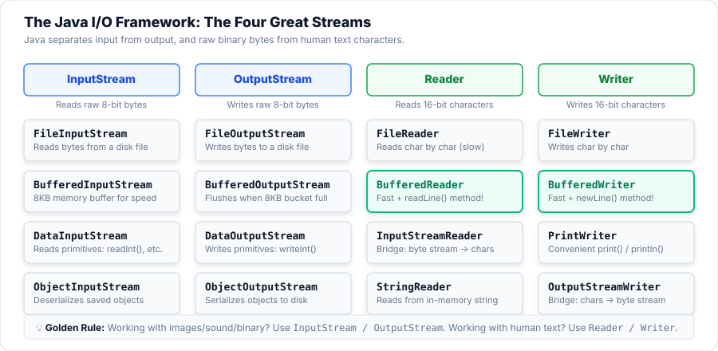
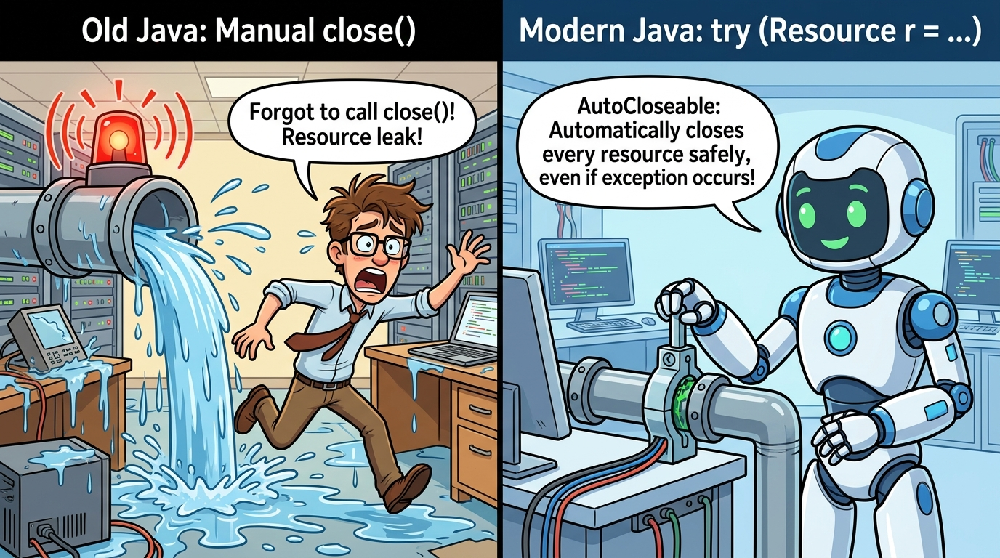
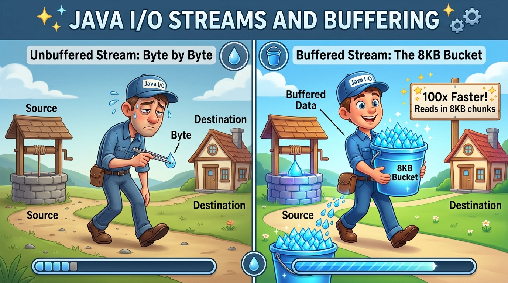
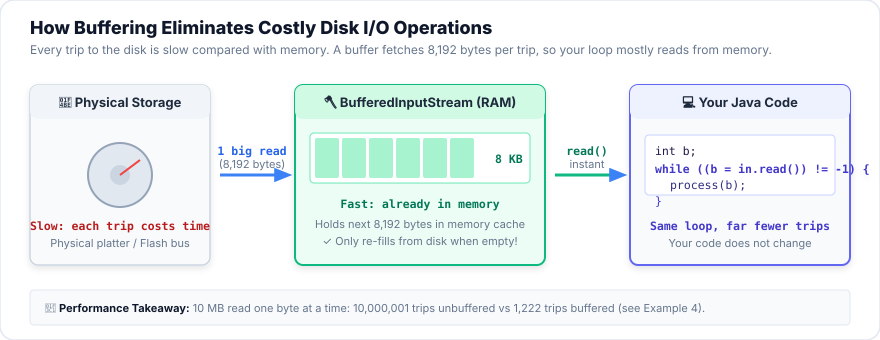
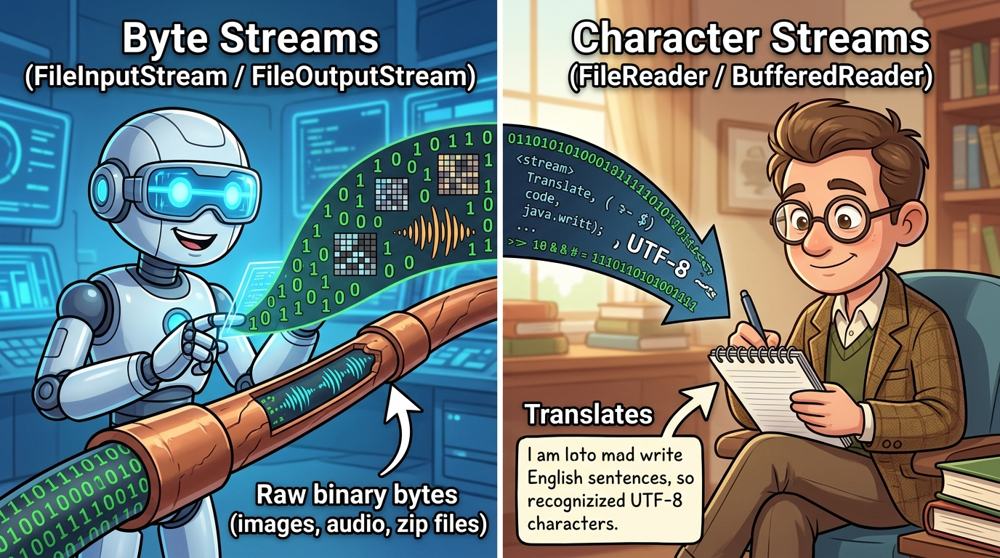
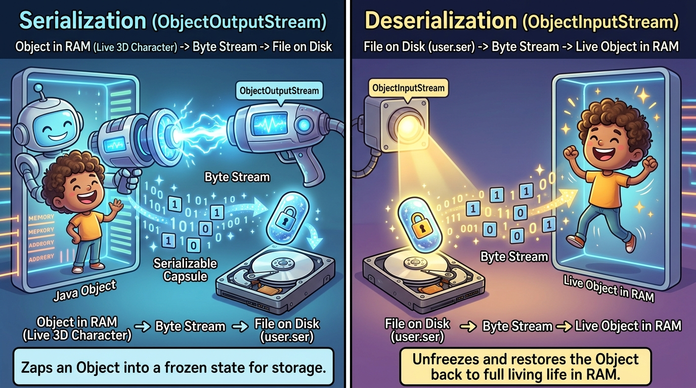

Session 3 — File Handling, Streams and Serialization
Until now, everything your programs knew disappeared the moment they stopped: every student added, every score counted. Today you learn to save data to files and read it back, as text, as raw bytes, as Java values, and even as whole objects. This is the first step towards programs that remember.
- Define a data stream and explain the difference between input and output streams.
- Use the
Fileclass to create, inspect, list, rename and delete files and folders. - Distinguish byte streams (
InputStream/OutputStream) from character streams (Reader/Writer) and choose the right one. - Explain why
BufferedInputStream/BufferedOutputStream(andBufferedReader/BufferedWriter) are faster. - Use the
DataInput/DataOutputinterfaces to save and load Java values in binary. - Define serialization, explain why it's needed, and use
Serializable,transientandserialVersionUID. - Use the
Consoleclass, and build a file manager program (Assignment A2).
Your Roadmap for Today
Open code/s03-files-streams in IntelliJ. The examples are in src/main/java/com/aptech/s03.
The examples create their files in a folder called sandbox inside the project folder. When you run a program in IntelliJ, "the current folder" (the working directory) is the project folder, so a path like "sandbox/notes.txt" means …/s03-files-streams/sandbox/notes.txt. After running an example, right-click the project in the Project panel → Reload from Disk to see the new files, and double-click a text file to look inside.
Why This Matters
A program's variables live in memory (RAM), which is fast but temporary: switch off the program (or the computer) and it's all gone. Files live on the disk, which is slower but permanent. Every app you use saves something: your game progress, your settings, your documents, your photos. In the final JavaFX project, your app will save and load its data; in Sessions 7–8 you'll use a database, which is itself built on files.
A stream is a pipe that data flows through, one drop at a time. An input stream is a pipe bringing water into your house (data coming into your program from a file); an output stream takes water out (data going from your program to a file).
You can attach extra fittings to a pipe: a tank that collects lots of water so you don't turn the tap a million times (a buffer),
or a filter that turns raw water into something useful (turning bytes into characters, or into ints). In Java you build a stream by
connecting pieces like this, and you'll see it all session.
Part 1 — What Is a Data Stream?
A data stream is a sequence of data, read or written one piece after another, in order. You don't get the whole file at once;
you take the next piece, then the next, until the stream says "that's the end". Java's streams all live in the package java.io ("input/output").
Example 1 — watch a stream, one byte at a time
To see what "one piece at a time" means without any files yet, this example uses a stream whose source is simply an array in memory.
package com.aptech.s03;
import java.io.ByteArrayInputStream;
import java.io.ByteArrayOutputStream;
import java.io.IOException;
import java.io.InputStream;
/**
* Example 1 — A stream is a sequence of data that flows one piece at a time.
* Here the "source" is just an array in memory, so you can see exactly what read() does.
*/
public class E01_WhatIsAStream {
public static void main(String[] args) throws IOException {
byte[] source = {72, 105, 33}; // the bytes for the letters H, i and !
InputStream in = new ByteArrayInputStream(source);
int b;
while ((b = in.read()) != -1) { // read ONE byte; -1 means "no more data"
System.out.println("read() gave " + b + " which is the character '" + (char) b + "'");
}
System.out.println("read() gave " + in.read() + " -> the end of the stream");
// Writing is the same idea in the other direction
ByteArrayOutputStream out = new ByteArrayOutputStream();
out.write(74); // J
out.write(97); // a
out.write("va".getBytes()); // a whole array of bytes at once
System.out.println("Bytes written: " + out.size() + " -> as text: " + out);
}
}| Line | What it does, in plain English |
|---|---|
| 13 | throws IOException: almost every stream method can fail (disk full, file missing…), so Java forces us to handle or pass on IOException. We'll deal with it properly in Part 3. |
| 14 | Three bytes. Every character on your keyboard has a number: H = 72, i = 105, ! = 33. |
| 15 | An InputStream that reads from that array. The variable type is InputStream, the parent class of all byte input streams. |
| 18 | The most important loop of the session: in.read() returns the next byte (a number 0–255), or −1 when there is nothing left. (b = in.read()) != -1 means "read a byte into b, and keep going while it isn't −1". |
| 19 | (char) b turns the number back into the character it stands for. |
| 21 | Reading again after the end just gives −1 again. |
| 24–27 | An OutputStream that collects bytes in memory. write(74) writes one byte; write(bytes) writes a whole array. |
| 28 | size() = how many bytes were written; printing it turns the bytes back into text. |
- Stream
- A one-way flow of data, read or written in order, one piece at a time.
- Input stream / output stream
- Data coming into your program / going out of your program.
- Byte
- The smallest unit of stored data: a number from 0 to 255 (8 bits). Every file, whether text, image or music, is just a long list of bytes.
java.io- The package holding Java's classic input/output classes.
- End of stream (−1)
- The signal
read()gives when there's no more data.
Part 2 — The File Class
Before reading a file, you need a way to point at it. java.io.File represents a path, the address of a file or folder.
Creating a File object does not create anything on the disk and does not read the contents. It's like writing an
address on an envelope: the house may or may not exist. File lets you ask questions about that address (does it exist? how big is it?) and do
housekeeping (create, rename, delete, list folders).
package com.aptech.s03;
import java.io.File;
import java.io.FileWriter;
import java.io.IOException;
import java.util.Arrays;
/**
* Example 2 — The File class describes a file or folder PATH. It does not read or write contents.
*/
public class E02_FileClass {
public static void main(String[] args) throws IOException {
File folder = new File("sandbox/e02"); // just a path - nothing is created yet
System.out.println("Folder exists? " + folder.exists());
System.out.println("mkdirs() created it? " + folder.mkdirs()); // makes sandbox AND e02
File notes = new File(folder, "notes.txt"); // a file INSIDE that folder
System.out.println("createNewFile(): " + notes.createNewFile());
System.out.println("createNewFile() again: " + notes.createNewFile()); // already exists
try (FileWriter w = new FileWriter(notes)) { // put 5 characters in it (explained in Example 6)
w.write("Hello");
}
System.out.println("getName(): " + notes.getName());
System.out.println("getPath(): " + notes.getPath());
System.out.println("isFile(): " + notes.isFile() + ", isDirectory(): " + notes.isDirectory());
System.out.println("length(): " + notes.length() + " bytes");
System.out.println("canRead(): " + notes.canRead() + ", canWrite(): " + notes.canWrite());
new File(folder, "todo.txt").createNewFile();
String[] names = folder.list(); // names of everything inside the folder
Arrays.sort(names);
System.out.println("Folder contains: " + Arrays.toString(names));
File renamed = new File(folder, "diary.txt");
System.out.println("renameTo(): " + notes.renameTo(renamed) + " -> now exists? " + renamed.exists());
for (File f : folder.listFiles()) { // clean up so the example can run again
f.delete();
}
System.out.println("delete() folder: " + folder.delete() + ", exists now? " + folder.exists());
}
}| Line | What it does, in plain English |
|---|---|
| 13 | A File for the path sandbox/e02. It's a relative path (no drive letter), so it's measured from the working directory, the project folder. |
| 14 | exists() asks the disk "is there really something here?" Not yet: false. |
| 15 | mkdirs() creates the folder and any missing parent folders (sandbox, then e02). (mkdir(), without the "s", only creates the last one.) |
| 17 | The two-argument constructor new File(folder, "notes.txt") points at a file inside a folder, with no need to glue paths together yourself. |
| 18–19 | createNewFile() creates an empty file and returns true; if it already exists it returns false and changes nothing. |
| 21–23 | We write "Hello" into it so it has some content (how this works comes in Part 6). |
| 25–29 | Questions you can ask: the name, the path, is it a file or a folder, its size in bytes, and whether we may read/write it. |
| 32–34 | list() gives the names of everything in a folder (listFiles() gives File objects). We sort them because the order isn't guaranteed. |
| 37 | renameTo() renames (or moves) a file. |
| 39–42 | delete() removes a file, or a folder only if it's empty, so we delete the files first. |
getPath() show sandbox\e02\notes.txt?
Windows separates folders with a backslash \; macOS and Linux use a forward slash /. You can always type forward slashes in
Java (Windows accepts them), and Java shows the path the way your operating system writes it. On a Mac you would see sandbox/e02/notes.txt.
| Method | What it does | Returns |
|---|---|---|
exists() | Is there a file or folder at this path? | boolean |
isFile() / isDirectory() | Is it a file? A folder? | boolean |
getName() / getPath() / getAbsolutePath() | Just the name / the path as given / the full path from the drive root | String |
getParentFile() | The folder this file is in | File |
length() | Size in bytes (0 if it doesn't exist) | long |
createNewFile() | Create an empty file if none exists | boolean (throws IOException) |
mkdir() / mkdirs() | Create a folder / a folder and all missing parents | boolean |
list() / listFiles() | Contents of a folder (names / File objects); null if not a folder | String[] / File[] |
renameTo(File) | Rename or move | boolean |
delete() | Delete a file, or an empty folder | boolean |
canRead() / canWrite() | Permissions | boolean |
new File("notes.txt").getAbsolutePath(). It shows exactly where Java put it.
(In Session 9 you'll meet the newer java.nio.file.Path and Files classes, which do the same jobs with more features.)
File f = new File("report.txt"); on a fresh computer, what is true?File object is just a path, like an address on an envelope. You need createNewFile() or an output stream to actually create the file.Part 3 — Byte Streams: InputStream and OutputStream
Byte streams read and write raw bytes, exactly as they are on the disk. They work for every kind of file: images, music, zip files, and text too.
All byte streams come from two abstract parent classes: InputStream (reading) and OutputStream (writing). For files you use
FileInputStream and FileOutputStream.

InputStream/OutputStream move raw bytes (any file); Reader/Writer move text characters. The class name tells you the family: names ending in Stream = bytes, Reader/Writer = characters.
Example 3 — write bytes, read bytes, copy a file
package com.aptech.s03;
import java.io.File;
import java.io.FileInputStream;
import java.io.FileOutputStream;
import java.io.IOException;
/**
* Example 3 — Byte streams: FileOutputStream writes raw bytes, FileInputStream reads them.
* Also shows try-with-resources, which closes the stream for you.
*/
public class E03_ByteStreams {
public static void main(String[] args) {
new File("sandbox").mkdirs();
File file = new File("sandbox/bytes.bin");
// 1) WRITE: try-with-resources - the stream in ( ) is closed automatically at the end
try (FileOutputStream out = new FileOutputStream(file)) {
out.write(65); // one byte: 65 is 'A'
out.write(new byte[]{66, 67, 10}); // B, C and a new-line character
out.write("Java".getBytes()); // the bytes of a String
} catch (IOException e) {
System.out.println("Could not write: " + e.getMessage());
}
System.out.println("File size: " + file.length() + " bytes");
// 2) READ: one byte at a time until read() returns -1
try (FileInputStream in = new FileInputStream(file)) {
int b;
StringBuilder numbers = new StringBuilder();
while ((b = in.read()) != -1) {
numbers.append(b).append(' ');
}
System.out.println("Bytes read: " + numbers);
} catch (IOException e) {
System.out.println("Could not read: " + e.getMessage());
}
// 3) COPY: read into a byte[] "bucket" and write the bucket out
try (FileInputStream in = new FileInputStream(file);
FileOutputStream out = new FileOutputStream("sandbox/bytes-copy.bin")) {
byte[] bucket = new byte[4];
int count;
int trips = 0;
while ((count = in.read(bucket)) != -1) { // count = how many bytes landed in the bucket
out.write(bucket, 0, count); // write only those bytes
trips++;
}
System.out.println("Copied in " + trips + " trips with a 4-byte bucket");
} catch (IOException e) {
System.out.println("Could not copy: " + e.getMessage());
}
// 4) What happens with a file that does not exist?
try (FileInputStream in = new FileInputStream("sandbox/missing.bin")) {
System.out.println("This line never runs: " + in.read());
} catch (IOException e) {
System.out.println("Caught " + e.getClass().getSimpleName() + ": " + e.getMessage());
}
}
}| Line | What it does, in plain English |
|---|---|
| 18 | try-with-resources: the stream is created inside try ( … ). When the block ends (normally or because of an error), Java closes the stream automatically. Opening FileOutputStream creates the file, or empties it if it already exists. |
| 19–21 | Three ways to write: one byte, an array of bytes, or the bytes of a String. 10 is the "new line" character. |
| 22–24 | If anything goes wrong, we catch the IOException and print a friendly message instead of crashing. |
| 25 | 8 bytes were written: A B C newline J a v a. |
| 28–33 | Read the file with the same read() != -1 loop as Example 1, now from a real file. |
| 40–41 | try-with-resources can open two streams at once (separated by ;). Both are closed at the end, in reverse order. |
| 42 | A bucket: an array that holds several bytes. Real programs use 1024, 4096 or more; 4 makes it easy to count. |
| 45 | read(bucket) fills the bucket and returns how many bytes it put in (maybe fewer than 4 at the end), or −1 at the end. |
| 46 | write(bucket, 0, count): write only the count bytes that were actually read. Writing the whole bucket would copy leftovers from the previous trip! |
| 55–59 | Opening a missing file throws FileNotFoundException (a kind of IOException). The message says exactly which file and why. |
try (FileInputStream in = new FileInputStream("data.bin")) {
// use the stream
} catch (IOException e) {
System.out.println("Problem: " + e.getMessage());
} // in.close() is called for you, even if an exception happened
try ( … ), Java closes every resource for you, even when an exception happens (right).
- Checked exception (
IOException) - An error Java forces you to deal with, either by catching it (
try/catch) or by declaring it (throws IOException). File operations can always fail, so their methods throwIOException. - try-with-resources
try (Resource r = …) { }: Java closesrautomatically when the block ends.- Close
- Telling the operating system you're finished with a file, so it can finish writing and release it.
Part 4 — Buffered Streams: Fewer Trips to the Disk
Every time a plain FileInputStream.read() is called, your program asks the operating system to fetch data from the disk. Each request is
slow compared with working in memory. Reading a 1 MB file one byte at a time means a million requests!

BufferedInputStream and BufferedOutputStream wrap another stream and add a buffer. Your code doesn't change at all: you still call
read() and write(). It just gets much faster. The example below proves it with a tiny "counting" stream that counts every request that reaches the file.
package com.aptech.s03;
import java.io.BufferedInputStream;
import java.io.BufferedOutputStream;
import java.io.File;
import java.io.FileInputStream;
import java.io.FileOutputStream;
import java.io.FilterInputStream;
import java.io.IOException;
import java.io.InputStream;
/**
* Example 4 — Buffered byte streams: fewer trips to the disk.
* A small "counting" stream shows how many times the real FILE is asked for data.
*/
public class E04_BufferedByteStreams {
/** Wraps any InputStream and counts every call that reaches the file. */
static class CountingInputStream extends FilterInputStream {
int calls = 0;
CountingInputStream(InputStream in) { super(in); }
@Override public int read() throws IOException { calls++; return super.read(); }
@Override public int read(byte[] b, int off, int len) throws IOException { calls++; return super.read(b, off, len); }
}
public static void main(String[] args) throws IOException {
new File("sandbox").mkdirs();
File file = new File("sandbox/100k.bin");
// Write 100,000 bytes through a BufferedOutputStream
try (BufferedOutputStream out = new BufferedOutputStream(new FileOutputStream(file))) {
for (int i = 0; i < 100_000; i++) {
out.write(i % 256); // goes into the buffer, not straight to disk
}
} // close() flushes the last part of the buffer
System.out.println("File size: " + file.length() + " bytes");
// 1) NO buffer: every read() goes to the file
CountingInputStream plain = new CountingInputStream(new FileInputStream(file));
try (plain) {
while (plain.read() != -1) { /* read every byte */ }
}
System.out.println("Unbuffered: the file was asked " + plain.calls + " times");
// 2) WITH a buffer: BufferedInputStream fetches 8192 bytes at a time
CountingInputStream counted = new CountingInputStream(new FileInputStream(file));
try (BufferedInputStream buffered = new BufferedInputStream(counted)) {
while (buffered.read() != -1) { /* read every byte - same code as above! */ }
}
System.out.println("Buffered: the file was asked " + counted.calls + " times");
}
}| Line | What it does, in plain English |
|---|---|
| 19–27 | A helper class that wraps any InputStream (FilterInputStream is the parent class made for wrapping) and adds 1 to calls every time data is requested from the file. It's our "trip counter". |
| 34 | Writing: new BufferedOutputStream(new FileOutputStream(file)). Read it from the inside out: a file stream, wrapped in a buffer. |
| 35–37 | 100,000 single-byte writes, all going into the buffer in memory. Only when the buffer is full (8192 bytes) does it go to the disk. |
| 38 | Closing flushes: the last, half-full buffer is written to the disk. Without closing (or flush()), those last bytes would be lost. |
| 42–46 | Unbuffered: our counter wraps the file directly, so every read() is a trip. (try (plain) means "close this existing variable at the end", a Java 9 shortcut.) |
| 49–52 | Buffered: the same loop, but reading through a BufferedInputStream. The buffer fetches 8192 bytes per trip. |
Where do those numbers come from? Unbuffered: 100,000 bytes = 100,000 trips, plus one final trip that returns −1. Buffered: 100,000 ÷ 8,192 = 12.2, so 13 full-or-partial trips, plus the final −1 trip = 14. That's about 7,000 times fewer requests, for the same result.

read() calls are then served from memory until the buffer is empty.
💻 Try it: count the trips
Choose a file size and compare the four ways of reading it. The numbers use the same formula as the counting stream, and were checked against the real JDK for 40 combinations.
new BufferedInputStream(new FileInputStream(f)), new BufferedOutputStream(new FileOutputStream(f)).
Output buffers must be flushed, and closing does that for you, which is one more reason for try-with-resources.
Part 5 — DataInput and DataOutput: Saving Java Values
Byte streams only understand bytes. But you usually want to save an int like 1500, a double like 87.5, or a String. The
DataOutput interface adds methods such as writeInt, writeDouble, writeBoolean and writeUTF
(for Strings), and DataInput adds the matching readInt, readDouble… The classes you use are
DataOutputStream and DataInputStream, which implement those interfaces and wrap another byte stream.
package com.aptech.s03;
import java.io.DataInputStream;
import java.io.DataOutputStream;
import java.io.File;
import java.io.FileInputStream;
import java.io.FileOutputStream;
import java.io.IOException;
/**
* Example 5 — DataOutputStream / DataInputStream (the DataOutput and DataInput interfaces):
* save Java values (int, double, boolean, String) in binary form and read them back.
*/
public class E05_DataStreams {
public static void main(String[] args) throws IOException {
new File("sandbox").mkdirs();
File file = new File("sandbox/player.dat");
try (DataOutputStream out = new DataOutputStream(new FileOutputStream(file))) {
out.writeUTF("Ada"); // a String: 2 bytes for its length + 3 bytes of text
out.writeInt(1500); // an int: always 4 bytes
out.writeDouble(87.5); // a double: always 8 bytes
out.writeBoolean(true); // a boolean: 1 byte
}
System.out.println("File size: " + file.length() + " bytes (5 + 4 + 8 + 1)");
try (DataInputStream in = new DataInputStream(new FileInputStream(file))) {
String name = in.readUTF(); // read back in EXACTLY the same order
int points = in.readInt();
double accuracy = in.readDouble();
boolean online = in.readBoolean();
System.out.println(name + " has " + points + " points, " + accuracy + "% accuracy, online=" + online);
}
// The wrong order does not give an error - it gives nonsense!
try (DataInputStream in = new DataInputStream(new FileInputStream(file))) {
int wrong = in.readInt(); // reads the first 4 bytes of "Ada" as a number
System.out.println("Reading in the wrong order gives: " + wrong);
}
}
}| Line | What it does, in plain English |
|---|---|
| 19 | A DataOutputStream wrapped around a file stream: it turns Java values into bytes and passes them down. |
| 20 | writeUTF("Ada") writes 2 bytes saying "3 bytes of text follow", then the 3 bytes. That length prefix is how readUTF later knows where the String ends. |
| 21–23 | An int is always 4 bytes, a double always 8, a boolean 1, whatever the value. 1500 and 7 both take 4 bytes. |
| 25 | Total: 5 + 4 + 8 + 1 = 18 bytes. |
| 27–32 | Read back with the matching methods, in exactly the same order they were written. The file has no labels: it's just 18 bytes in a row. |
| 36–38 | Read in the wrong order (readInt first) and Java happily takes the first 4 bytes (the length 3, then "Ad") and turns them into the number 213348. No error, just garbage. |
player.dat really contains.writeInt(3), then each player's fields. When loading, readInt() tells you how many times to loop.
You'll use exactly this in Practice 4 and in Assignment A2 (R4/R5).
DataOutputStream/DataInputStream (the DataOutput/DataInput interfaces) save Java values as compact bytes.
Fixed sizes: int 4, long 8, double 8, boolean 1; Strings via writeUTF. Read in the same order you wrote. The file isn't human-readable: open it in Notepad and you'll see gibberish.
Part 6 — Character Streams: Reading and Writing Text
Text is special. A character such as A is stored as 1 byte, but é needs 2 bytes and the Naira sign ₦ needs 3 (in the
UTF-8 encoding that Java uses by default). If you read text byte by byte, you'd chop ₦ into three meaningless numbers.
Character streams (Reader and Writer) solve this: they turn bytes into whole characters for you, and back again.

Example 6 — the same file as characters and as bytes
package com.aptech.s03;
import java.io.File;
import java.io.FileInputStream;
import java.io.FileReader;
import java.io.FileWriter;
import java.io.IOException;
/**
* Example 6 — Character streams (Reader / Writer) work with TEXT characters, not raw bytes.
*/
public class E06_CharacterStreams {
public static void main(String[] args) throws IOException {
new File("sandbox").mkdirs();
File file = new File("sandbox/price.txt");
String text = "₦500 café";
try (FileWriter writer = new FileWriter(file)) { // Writer = characters out (UTF-8 by default)
writer.write(text);
}
System.out.println("The text has " + text.length() + " characters");
System.out.println("The file has " + file.length() + " bytes");
// Read it back as CHARACTERS
try (FileReader reader = new FileReader(file)) {
int c;
int count = 0;
StringBuilder sb = new StringBuilder();
while ((c = reader.read()) != -1) { // read() returns one CHARACTER (or -1)
sb.append((char) c);
count++;
}
System.out.println("FileReader read " + count + " characters: " + sb);
}
// Read the same file as BYTES
try (FileInputStream in = new FileInputStream(file)) {
int count = 0;
while (in.read() != -1) {
count++;
}
System.out.println("FileInputStream read " + count + " bytes");
}
// FileWriter with append = true adds to the end instead of replacing the file
try (FileWriter writer = new FileWriter(file, true)) {
writer.write(" - sold!");
}
try (FileReader reader = new FileReader(file)) {
char[] buffer = new char[100];
int n = reader.read(buffer); // read up to 100 chars at once
System.out.println("After appending: " + new String(buffer, 0, n));
}
}
}| Line | What it does, in plain English |
|---|---|
| 16 | 9 characters, including two that aren't plain English letters: ₦ and é. |
| 18–20 | FileWriter is the character version of FileOutputStream: you give it text, and it encodes it as UTF-8 bytes. |
| 21–22 | 9 characters became 12 bytes: 7 plain characters (1 byte each) + é (2) + ₦ (3). |
| 25–33 | FileReader.read() returns one whole character (as an int), or −1 at the end. We get all 9 characters back perfectly. |
| 37–42 | The same file through a byte stream: 12 reads, because it sees the raw bytes. |
| 46 | new FileWriter(file, true): the true means append (add to the end). Without it, opening a FileWriter erases the file first. |
| 50–52 | Readers can also read into a char[] bucket; n is how many characters were read. |
💻 Try it: Bytes vs Characters
Type anything, in any language, with emoji, and see exactly what a FileInputStream and a FileReader would get from a file containing it. (Checked against the real JDK for 150+ strings.) Notice that an emoji like 😀 counts as 2 Java characters!
Example 7 — the everyday tools: BufferedReader, BufferedWriter, PrintWriter
In real programs you almost always read text line by line. BufferedReader adds a buffer and the very useful readLine(); BufferedWriter adds newLine(); PrintWriter gives you println and printf, just like System.out. Here they save and load a small CSV file (comma-separated values), the format spreadsheets like Excel can open.
package com.aptech.s03;
import java.io.BufferedReader;
import java.io.BufferedWriter;
import java.io.File;
import java.io.FileReader;
import java.io.FileWriter;
import java.io.IOException;
import java.io.PrintWriter;
import java.util.ArrayList;
import java.util.List;
/**
* Example 7 — The everyday way to handle text files: BufferedWriter / PrintWriter to write,
* BufferedReader.readLine() to read line by line. Saves and loads a small CSV file.
*/
public class E07_BufferedTextFiles {
public static void main(String[] args) throws IOException {
new File("sandbox").mkdirs();
File csv = new File("sandbox/students.csv");
// 1) WRITE lines with BufferedWriter
try (BufferedWriter out = new BufferedWriter(new FileWriter(csv))) {
out.write("id,name,score");
out.newLine(); // the correct line ending for this computer
out.write("S1,Ada,95");
out.newLine();
out.write("S2,Ben,78");
out.newLine();
}
// 2) APPEND with PrintWriter, which has println and printf like System.out
try (PrintWriter out = new PrintWriter(new FileWriter(csv, true))) {
out.println("S3,Chi,88");
out.printf("%s,%s,%d%n", "S4", "Dayo", 61);
}
// 3) READ line by line with BufferedReader
List<String> names = new ArrayList<>();
int total = 0;
try (BufferedReader in = new BufferedReader(new FileReader(csv))) {
String header = in.readLine(); // first line: the column names
System.out.println("Header: " + header);
String line;
while ((line = in.readLine()) != null) { // readLine() returns null at the end
String[] parts = line.split(","); // "S1,Ada,95" -> ["S1", "Ada", "95"]
names.add(parts[1]);
total += Integer.parseInt(parts[2]);
}
}
System.out.println("Students: " + names);
System.out.println("Average score: " + (double) total / names.size());
}
}| Line | What it does, in plain English |
|---|---|
| 23 | A FileWriter wrapped in a BufferedWriter: characters are collected in memory and written in big chunks. |
| 24–29 | write a line of text, then newLine(), which writes the correct line ending for your operating system (Windows uses 2 characters, \r\n; Mac/Linux use 1, \n). |
| 33 | Reopen in append mode, wrapped in a PrintWriter. |
| 34–35 | println writes a line; printf formats one: %s = a String, %d = a whole number, %n = a new line. |
| 41 | A BufferedReader wrapping a FileReader. |
| 42 | The first readLine() reads the header line, which we just print. |
| 45 | The standard line-reading loop: readLine() returns the next line without its line ending, or null at the end of the file. |
| 46 | split(",") cuts "S1,Ada,95" into {"S1", "Ada", "95"}. |
| 47–48 | Take the name (index 1) and turn the score text (index 2) into a number with Integer.parseInt. |
| You want to… | Use | Key methods |
|---|---|---|
| Read text line by line | new BufferedReader(new FileReader(f)) | readLine() → String or null |
| Write lines of text | new BufferedWriter(new FileWriter(f)) | write(s), newLine() |
| Write formatted text | new PrintWriter(new FileWriter(f)) | println, printf |
| Add to an existing file | new FileWriter(f, true) | (append mode) |
| Turn a byte stream into a character stream | new InputStreamReader(byteStream) / new OutputStreamWriter(byteStream) | the "bridge" classes |
💻 Try it: the Stream Builder
By now you've seen that Java streams are built like Russian dolls: each class wraps the one inside it and adds a skill. Pick what's in your file and whether you're reading or writing, and the builder gives you the correct combination. (All 16 combinations it can produce were compiled with javac.)
BufferedReader (readLine() until null) and BufferedWriter/PrintWriter.
Part 7 — Serialization: Saving Whole Objects
Why do we need it?
Saving a Student with a Data stream means writing each field one by one, and reading them back in the same order. Now imagine an
Account that holds a List of transactions, each holding a date and an amount… Writing all that by hand is tedious and
easy to get wrong. Serialization does it for you: it turns a whole object, including every object it refers to, into a stream of bytes,
and deserialization turns those bytes back into brand-new objects later, even in another program or on another computer.
serialVersionUID.

ObjectOutputStream turns a live object into a stream of bytes saved in a file; ObjectInputStream rebuilds a new, equal object from those bytes later.
transient fields are not saved.Example 8 — saving and loading a list of accounts
package com.aptech.s03;
import java.io.File;
import java.io.FileInputStream;
import java.io.FileOutputStream;
import java.io.IOException;
import java.io.ObjectInputStream;
import java.io.ObjectOutputStream;
import java.io.Serializable;
import java.util.ArrayList;
import java.util.List;
/**
* Example 8 — Serialization: save WHOLE OBJECTS to a file and bring them back later.
*/
public class E08_Serialization {
/** "implements Serializable" is Java's permission slip: objects of this class may be saved. */
static class Account implements Serializable {
private static final long serialVersionUID = 1L; // the class's "version number"
private final String owner;
private final double balance;
private final ArrayList<String> history = new ArrayList<>(); // ArrayList is Serializable
private transient String pin; // transient = NEVER saved
Account(String owner, double balance, String pin) {
this.owner = owner;
this.balance = balance;
this.pin = pin;
}
@Override
public String toString() {
return owner + " balance=" + balance + " history=" + history + " pin=" + pin;
}
}
public static void main(String[] args) throws IOException, ClassNotFoundException {
new File("sandbox").mkdirs();
File file = new File("sandbox/accounts.ser");
List<Account> accounts = new ArrayList<>();
Account ada = new Account("Ada", 2500.0, "1234");
ada.history.add("deposit 500");
accounts.add(ada);
accounts.add(new Account("Ben", 90.5, "9999"));
System.out.println("Before saving: " + accounts);
// SERIALIZE: object -> bytes -> file
try (ObjectOutputStream out = new ObjectOutputStream(new FileOutputStream(file))) {
out.writeObject(accounts); // the whole list, and everything inside it
}
System.out.println("Saved " + file.length() + " bytes");
// DESERIALIZE: file -> bytes -> brand-new objects
try (ObjectInputStream in = new ObjectInputStream(new FileInputStream(file))) {
@SuppressWarnings("unchecked")
List<Account> loaded = (List<Account>) in.readObject(); // readObject returns Object, so cast
System.out.println("After loading: " + loaded);
System.out.println("Same object as before? " + (loaded.get(0) == ada));
}
}
}| Line | What it does, in plain English |
|---|---|
| 19 | implements Serializable is Java's permission slip. The interface has no methods at all (a marker interface); it just says "objects of this class may be serialized". Without it: NotSerializableException. |
| 20 | serialVersionUID is the class's version number. It's saved inside the file; when loading, Java checks it matches the class it has now. Always declare it yourself (start with 1L). |
| 22–24 | Normal fields are saved. The list history is saved along with its contents, because ArrayList and String are Serializable too. |
| 25 | transient means "don't save this field". Use it for secrets (PINs, passwords) and things that make no sense later (open files, network connections). After loading, a transient field holds its default: null, 0 or false. |
| 51–53 | ObjectOutputStream.writeObject(accounts) saves the whole list, and every Account and String inside it, in one call. |
| 57–59 | readObject() rebuilds the objects. It returns plain Object, so we cast it back to List<Account>. (Generics are erased, Session 2 Part 8, so Java can't check the cast; @SuppressWarnings("unchecked") says "I know".) |
| 60 | Everything came back except the PINs, which are null, exactly what transient promised. |
| 61 | The loaded Account is a new object, an exact copy rather than the original. So == is false. |
💻 Try it: the Serialization Lab
Mark fields as transient, then save and load. Then try the two classic failures: remove implements Serializable, or change the serialVersionUID after saving (as if you edited the class and then loaded an old file). The error messages shown are the real ones from the JDK.
| Keyword / interface | Meaning |
|---|---|
implements Serializable | "Objects of this class may be saved." Every object inside must be Serializable too. |
private static final long serialVersionUID = 1L; | The class version. Change it when you change the class in a way old files can't handle. |
transient | "Don't save this field." It comes back as null/0/false. |
static fields | Never saved: they belong to the class, not the object. |
ObjectOutputStream.writeObject(obj) | Serialize. |
ObjectInputStream.readObject() | Deserialize. Returns Object (cast it); may throw ClassNotFoundException. |
.ser
files that your own program wrote. For sharing data with other programs or the internet, professionals use text formats like CSV or JSON instead.
ObjectOutputStream.writeObject; deserialization rebuilds
a copy with ObjectInputStream.readObject. The class must implement Serializable; declare a serialVersionUID; mark secrets transient.
Part 8 — The Console Class
java.io.Console reads from, and writes to, the real text terminal that started your program. Its special power is
readPassword(): what you type is not shown on screen. You get a console with System.console(), but here's the catch:
it returns null when there is no real terminal, for example when you press ▶ in IntelliJ, whose Run window isn't a real terminal.
So a good program always checks for null and has a fallback.
package com.aptech.s03;
import java.io.Console;
import java.util.Arrays;
import java.util.Scanner;
/**
* Example 9 — The Console class: reading from a REAL terminal, including hidden passwords.
* Run it twice: once with the green ▶ (IntelliJ), once from a terminal window (see the lesson).
*/
public class E09_ConsoleClass {
public static void main(String[] args) {
Console console = System.console(); // null when there is no real terminal
if (console == null) {
System.out.println("No console available (are you running inside an IDE?)");
System.out.println("Falling back to Scanner - the password WILL be visible.");
Scanner in = new Scanner(System.in);
System.out.print("Username: ");
String user = in.hasNextLine() ? in.nextLine() : "";
System.out.print("Password: ");
String pass = in.hasNextLine() ? in.nextLine() : "";
System.out.println("Welcome, " + user + " (password length " + pass.length() + ")");
return;
}
String user = console.readLine("Username: "); // like Scanner, but with a prompt built in
char[] pass = console.readPassword("Password: "); // typing is HIDDEN, returns char[]
console.printf("Welcome, %s (password length %d)%n", user, pass.length);
Arrays.fill(pass, ' '); // wipe the password from memory
}
}| Line | What it does, in plain English |
|---|---|
| 13 | Ask for the console. You get null if the program isn't connected to a real terminal. |
| 15–25 | The fallback: warn the user and use a Scanner instead. It works, but the password is visible as it's typed. return ends main early. |
| 27 | console.readLine(prompt) shows the prompt and reads a line: one call instead of print + nextLine. |
| 28 | readPassword reads without showing the letters and returns a char[], not a String… |
| 29 | console.printf works like System.out.printf. |
| 30 | … so that we can wipe it from memory straight after use. A String can't be wiped; it stays in memory until Java cleans up. |
Real output when run with the ▶ button in IntelliJ (no terminal, so the fallback runs; here the user typed ada and secret):
target/classes.java -cp target/classes com.aptech.s03.E09_ConsoleClass and press Enter. Type a username, then a password. Notice that nothing appears while you type the password.(What you should see in a real terminal. The password line stays blank while you type.)
System.console() gives you a Console only in a real terminal, and null otherwise, so always check. Use readLine(prompt) for text and
readPassword(prompt) for hidden input (returns char[]; wipe it after use).
Part 9 — Don't Confuse This with the "Stream API"
Java uses the word "stream" for two completely different things. Everything above is java.io: streams that move bytes and characters to and from
files. Since Java 8 there is also java.util.stream, the Stream API, which processes the elements of a collection in a pipeline
(filter, sort, map, collect). You'll use it more later; here's a taste so you recognise it.
package com.aptech.s03;
import java.util.List;
import java.util.stream.Collectors;
/**
* Example 10 — Don't confuse the two kinds of "stream"!
* java.io streams move BYTES/CHARACTERS in and out of files (this session).
* java.util.stream (the Stream API) processes the ELEMENTS of a collection in a pipeline.
*/
public class E10_StreamApiTaste {
public static void main(String[] args) {
List<Integer> scores = List.of(95, 42, 78, 61, 88, 30);
List<Integer> passed = scores.stream() // 1) turn the list into a Stream
.filter(s -> s >= 50) // 2) keep only the passes
.sorted() // 3) sort them
.collect(Collectors.toList()); // 4) gather the result into a new List
System.out.println("Passed, sorted: " + passed);
double average = scores.stream()
.mapToInt(Integer::intValue) // Integer -> int so we can do maths
.average()
.orElse(0);
System.out.println("Average: " + average);
String report = scores.stream()
.map(s -> s >= 50 ? "P" : "F") // turn each score into a letter
.collect(Collectors.joining(""));
System.out.println("Pass/fail pattern: " + report);
}
}| Line | What it does, in plain English |
|---|---|
| 15 | scores.stream() starts a pipeline over the list's elements. Nothing to do with files! |
| 16–18 | Keep elements where s >= 50, sort them, and collect the result into a new List. The original list is unchanged. |
| 21–24 | Turn the Integers into ints, average them, and use 0 if the list were empty. |
| 27–29 | map transforms each element (score → "P" or "F"); joining glues the results into one String. |
java.io streams (this session) | java.util.stream (Stream API) | |
|---|---|---|
| Moves | bytes / characters | elements of a collection |
| To / from | files, keyboard, network | Lists, Sets, arrays (in memory) |
| Typical code | in.read(), readLine(), write() | .filter(), .map(), .collect() |
🛠 Guided Lab: The Notes Keeper
You'll build a small class that saves notes to a text file, reads them back, counts the words and makes a backup copy, using File, character streams, buffering and byte streams together. Pair up; swap the typist after step 4.
NotesKeeper with a field private final File file; and a constructor that receives the File. In main, create new NotesKeeper(new File("sandbox/notes/diary.txt")).reset(): create the folder with file.getParentFile().mkdirs(), then open a FileWriter without append (in try-with-resources) and write "". That empties the file, so every run starts fresh. Add throws IOException to the method (and to main).addNote(String note): open new BufferedWriter(new FileWriter(file, true)). The true is essential! Write the note and newLine(). Add three notes from main. Then open diary.txt in IntelliJ (Reload from Disk) and check it.readAll(): return a List<String> with every line, using a BufferedReader and the while ((line = in.readLine()) != null) loop. Print the notes numbered from 1.countWords(): for each non-blank line, note.trim().split("\\s+").length gives its word count (\\s+ means "one or more spaces").backupTo(File backup): copy the file byte by byte with BufferedInputStream and BufferedOutputStream (both in one try-with-resources), counting the bytes. Return the count, and in main check that both files have the same length().reset() call and run twice. What happens to the notes? Why? (Then put it back.)search(String word) that returns only the notes containing word (ignore upper/lower case), and deleteNote(int number) that rewrites the file without that line.👀 Show the complete lab solution (try on your own first!)
package com.aptech.s03.lab;
import java.io.BufferedInputStream;
import java.io.BufferedOutputStream;
import java.io.BufferedReader;
import java.io.BufferedWriter;
import java.io.File;
import java.io.FileInputStream;
import java.io.FileOutputStream;
import java.io.FileReader;
import java.io.FileWriter;
import java.io.IOException;
import java.util.ArrayList;
import java.util.List;
/**
* GUIDED LAB — Notes Keeper: save notes to a text file, read them back, count them, and back them up.
*/
public class NotesKeeper {
private final File file;
public NotesKeeper(File file) {
this.file = file;
}
/** STEP 2 — make sure the folder exists and start with an empty notes file. */
public void reset() throws IOException {
file.getParentFile().mkdirs();
try (FileWriter w = new FileWriter(file)) { // opening WITHOUT append empties the file
w.write("");
}
}
/** STEP 3 — add one note at the END of the file (append mode). */
public void addNote(String note) throws IOException {
try (BufferedWriter out = new BufferedWriter(new FileWriter(file, true))) {
out.write(note);
out.newLine();
}
}
/** STEP 4 — read every line back into a List. */
public List<String> readAll() throws IOException {
List<String> notes = new ArrayList<>();
try (BufferedReader in = new BufferedReader(new FileReader(file))) {
String line;
while ((line = in.readLine()) != null) {
notes.add(line);
}
}
return notes;
}
/** STEP 5 — count all the words in all the notes. */
public int countWords() throws IOException {
int words = 0;
for (String note : readAll()) {
if (!note.isBlank()) {
words += note.trim().split("\\s+").length; // split on one or more spaces
}
}
return words;
}
/** STEP 6 — copy the file byte by byte (with buffers) and return how many bytes were copied. */
public long backupTo(File backup) throws IOException {
long copied = 0;
try (BufferedInputStream in = new BufferedInputStream(new FileInputStream(file));
BufferedOutputStream out = new BufferedOutputStream(new FileOutputStream(backup))) {
int b;
while ((b = in.read()) != -1) {
out.write(b);
copied++;
}
}
return copied;
}
public static void main(String[] args) throws IOException {
NotesKeeper keeper = new NotesKeeper(new File("sandbox/notes/diary.txt"));
keeper.reset();
keeper.addNote("Learned about byte and character streams");
keeper.addNote("Buffered streams make fewer trips to the disk");
keeper.addNote("Remember: close your streams with try-with-resources");
List<String> notes = keeper.readAll();
for (int i = 0; i < notes.size(); i++) {
System.out.println((i + 1) + ". " + notes.get(i));
}
System.out.println("Notes: " + notes.size() + ", words: " + keeper.countWords());
File backup = new File("sandbox/notes/diary-backup.txt");
long copied = keeper.backupTo(backup);
System.out.println("Backed up " + copied + " bytes; sizes match? "
+ (backup.length() == new File("sandbox/notes/diary.txt").length()));
}
}Expected output (on Windows):
Why 143 bytes? The notes have 137 characters plus 3 line endings. On Windows newLine() writes 2 characters (\r\n) = 6 → 143. On a Mac or Linux it writes 1 (\n) = 3 → 140. Your number depends on your operating system, and that's correct. Step 7 answer: without reset() the file is never emptied, and append mode keeps adding, so the notes appear twice.
⚠️ Common Mistakes (and the Exact Error You'll See)
Every message below was produced on JDK 25. File paths show backslashes because they were run on Windows.
void load() {
FileReader r = new FileReader("x.txt");
}Why: opening a file can fail, and Java insists you plan for it. Fix: either wrap the code in try { … } catch (IOException e) { … }, or add throws IOException to the method header and let the caller handle it.
BufferedWriter w = new BufferedWriter(new FileWriter("sandbox/forgot.txt"));
w.write("important data");
System.out.println(new File("sandbox/forgot.txt").length()); // no close()!Why: the text is still sitting in the buffer in memory. If the program ends now, it's lost and your file stays empty, with no error message at all. Fix: try-with-resources, always.
new FileWriter("reports/2026/june.txt"); // the folders reports/2026 don't existWhy: output streams create files, not folders. Fix: new File("reports/2026").mkdirs(); first. (Compare "cannot find the path" here with "cannot find the file" when reading a missing file.)
new FileWriter("diary.txt"); // wipes the file!
new FileWriter("diary.txt", true); // adds to the endNo error at all, just lost data. Opening a FileWriter or FileOutputStream without true empties the file immediately, even before you write anything.
out.writeInt(7); // wrote ONE int
in.readInt(); in.readInt(); // tried to read TWOWhy: EOF = "End Of File". Unlike read(), the Data methods can't return −1 (it could be a real value), so they throw instead. Fix: write a count first and read exactly that many; read in the same order you wrote.
class Person { String name = "Ada"; } // no "implements Serializable"
out.writeObject(new Person());Fix: class Person implements Serializable. Remember that every object inside it must be Serializable too (or marked transient).
You saved Pet objects with serialVersionUID = 1L, then edited the class and changed it to 2L:
Why: the file says "made with version 1", but the class is now version 2. Fix: keep the same UID when your changes are compatible (e.g. adding a field); if you don't declare a UID, Java calculates one from the class, so almost any edit breaks old files. That's why you always declare it.
Reading ₦500 byte by byte and casting each byte to char gives three strange symbols instead of ₦. Reading a photo with a FileReader "decodes" bytes that were never text and corrupts the copy.
Rule: text → Reader/Writer; everything else → InputStream/OutputStream.
📝 Knowledge Check
12 questions on the whole session. Aim for 10/12 before starting Assignment A2.
in.read() return when a byte stream has no more data?readLine() returns null at the end; the Data stream methods throw EOFException.)new File("reports/june.txt") do on its own?mkdirs(), createNewFile() or a stream to touch the disk.InputStream/OutputStream are byte streams; Reader/Writer are character streams.₦5 (saved as UTF-8). How many values does a FileInputStream read before −1, and how many does a FileReader read?₦ takes 3 bytes in UTF-8 and 5 takes 1, so 4 bytes. But they are 2 characters. Try it in the Bytes vs Characters demo.BufferedInputStream faster than a plain FileInputStream when reading one byte at a time?BufferedWriter and your program ends without closing or flushing it, the file can end up empty, and Java shows no error.close(), 14 after. Use try-with-resources.try (DataOutputStream out = new DataOutputStream(new FileOutputStream("t.dat"))) {
out.writeInt(5);
out.writeDouble(2.5);
out.writeBoolean(false);
}while ((line = in.readLine()) != ) { … }null. readLine() returns null at the end of the file (an empty line is "", not null).transient do on a field of a Serializable class?null.serialVersionUID from 1L to 2L. What happens when you load the old file?System.console() returned null. What is the most likely reason?null.) Always check for null and provide a fallback.FileNotFoundException … cannot find the path specified (when writing)
EOFException
NotSerializableException
error: unreported exception … must be caught or declared to be thrown
💪 Practice Exercises
Not graded. Do at least P1, P2 and P4 before starting A2; they are the building blocks of R1–R8. Solutions are tested programs in code/s03-files-streams/…/practice/.
Easy P1 — Line, word and character counter
Write a short poem to sandbox/poem.txt (include one empty line), then read it back and print how many lines, words and characters it has.
💡 Hint
PrintWriter to write. BufferedReader + readLine() to read. Skip blank lines when counting words (line.isBlank()).
✅ Solution
package com.aptech.s03.practice;
import java.io.BufferedReader;
import java.io.File;
import java.io.FileReader;
import java.io.FileWriter;
import java.io.IOException;
import java.io.PrintWriter;
/** Practice 1 (easy) — count the lines, words and characters of a text file (like the "wc" tool). */
public class P1_LineWordCounter {
public static void main(String[] args) throws IOException {
new File("sandbox").mkdirs();
File poem = new File("sandbox/poem.txt");
try (PrintWriter out = new PrintWriter(new FileWriter(poem))) {
out.println("Twinkle twinkle little star");
out.println("How I wonder what you are");
out.println("");
out.println("Up above the world so high");
}
int lines = 0, words = 0, chars = 0;
try (BufferedReader in = new BufferedReader(new FileReader(poem))) {
String line;
while ((line = in.readLine()) != null) {
lines++;
chars += line.length();
if (!line.isBlank()) {
words += line.trim().split("\\s+").length;
}
}
}
System.out.println("Lines: " + lines + ", words: " + words + ", characters (without line breaks): " + chars);
}
}Easy P2 — A copy method for any file
Write long copy(File source, File target) that copies any file using buffered byte streams and a 1024-byte bucket, returning the number of bytes copied. Test it on a generated 5000-byte file, and on a missing file (handle the exception).
💡 Hint
Example 3, part 3, with the streams wrapped in buffers. Remember write(bucket, 0, n), not write(bucket).
✅ Solution
package com.aptech.s03.practice;
import java.io.BufferedInputStream;
import java.io.BufferedOutputStream;
import java.io.File;
import java.io.FileInputStream;
import java.io.FileOutputStream;
import java.io.IOException;
/** Practice 2 (easy) — a reusable copy method that works for ANY file (text, image, video...). */
public class P2_FileCopier {
static long copy(File source, File target) throws IOException {
long total = 0;
try (BufferedInputStream in = new BufferedInputStream(new FileInputStream(source));
BufferedOutputStream out = new BufferedOutputStream(new FileOutputStream(target))) {
byte[] bucket = new byte[1024];
int n;
while ((n = in.read(bucket)) != -1) {
out.write(bucket, 0, n);
total += n;
}
}
return total;
}
public static void main(String[] args) throws IOException {
new File("sandbox").mkdirs();
File original = new File("sandbox/photo.bin");
try (FileOutputStream out = new FileOutputStream(original)) {
for (int i = 0; i < 5000; i++) {
out.write(i % 200); // pretend this is an image
}
}
File copy = new File("sandbox/photo-copy.bin");
long bytes = copy(original, copy);
System.out.println("Copied " + bytes + " bytes. Same size? " + (original.length() == copy.length()));
try {
copy(new File("sandbox/nope.bin"), new File("sandbox/nope-copy.bin"));
} catch (IOException e) {
System.out.println("Error handled: " + e.getMessage());
}
}
}Medium P3 — A formatted times table
Write the 7 times table (1–5) to a file with PrintWriter.printf so the numbers line up in columns, then read the file back and print each line with a | in front.
💡 Hint
%2d prints a number right-aligned in 2 spaces; %3d in 3.
✅ Solution
package com.aptech.s03.practice;
import java.io.BufferedReader;
import java.io.File;
import java.io.FileReader;
import java.io.FileWriter;
import java.io.IOException;
import java.io.PrintWriter;
/** Practice 3 (medium) — write a formatted times table to a file with PrintWriter, then read it back. */
public class P3_TimesTable {
public static void main(String[] args) throws IOException {
new File("sandbox").mkdirs();
File file = new File("sandbox/table-7.txt");
int n = 7;
try (PrintWriter out = new PrintWriter(new FileWriter(file))) {
out.printf("Times table for %d%n", n);
for (int i = 1; i <= 5; i++) {
out.printf("%2d x %d = %3d%n", i, n, i * n); // %2d = a number in 2 spaces, right-aligned
}
}
try (BufferedReader in = new BufferedReader(new FileReader(file))) {
String line;
while ((line = in.readLine()) != null) {
System.out.println("| " + line);
}
}
}
}Medium P4 — High scores in binary
Write save(Map<String,Integer>, File) and load(File) for a high-score table using Data streams: first the number of entries, then each name (writeUTF) and score (writeInt).
💡 Hint
"Write the count first" (Part 5 tip). Use a LinkedHashMap when loading so the order is kept.
✅ Solution
package com.aptech.s03.practice;
import java.io.DataInputStream;
import java.io.DataOutputStream;
import java.io.File;
import java.io.FileInputStream;
import java.io.FileOutputStream;
import java.io.IOException;
import java.util.LinkedHashMap;
import java.util.Map;
/** Practice 4 (medium) — save a high-score table in binary: first the COUNT, then each name + score. */
public class P4_HighScores {
static void save(Map<String, Integer> scores, File file) throws IOException {
try (DataOutputStream out = new DataOutputStream(new FileOutputStream(file))) {
out.writeInt(scores.size()); // write how many entries follow
for (Map.Entry<String, Integer> e : scores.entrySet()) {
out.writeUTF(e.getKey());
out.writeInt(e.getValue());
}
}
}
static Map<String, Integer> load(File file) throws IOException {
Map<String, Integer> scores = new LinkedHashMap<>();
try (DataInputStream in = new DataInputStream(new FileInputStream(file))) {
int count = in.readInt(); // read the count first
for (int i = 0; i < count; i++) {
String name = in.readUTF();
int score = in.readInt();
scores.put(name, score);
}
}
return scores;
}
public static void main(String[] args) throws IOException {
new File("sandbox").mkdirs();
File file = new File("sandbox/highscores.dat");
Map<String, Integer> scores = new LinkedHashMap<>();
scores.put("Kemi", 9800);
scores.put("Musa", 7200);
scores.put("Ada", 6100);
save(scores, file);
System.out.println("Saved " + scores.size() + " scores in " + file.length() + " bytes");
System.out.println("Loaded: " + load(file));
}
}Challenge P5 — Serialize a shop inventory
Store items (name, quantity, price) in a TreeMap<String, Item> keyed by product code, serialize the whole map in one call, load it back, and compute the total stock value.
💡 Hint
Item must be Serializable. A record (a compact data class, Session 9) can simply write implements Serializable. TreeMap is Serializable already.
✅ Solution
package com.aptech.s03.practice;
import java.io.File;
import java.io.FileInputStream;
import java.io.FileOutputStream;
import java.io.IOException;
import java.io.ObjectInputStream;
import java.io.ObjectOutputStream;
import java.io.Serializable;
import java.util.TreeMap;
/** Practice 5 (challenge) — serialize a whole shop inventory (a TreeMap of Item objects) and restore it. */
public class P5_InventorySerializer {
record Item(String name, int quantity, double price) implements Serializable { }
public static void main(String[] args) throws IOException, ClassNotFoundException {
new File("sandbox").mkdirs();
File file = new File("sandbox/inventory.ser");
TreeMap<String, Item> stock = new TreeMap<>();
stock.put("P01", new Item("Pen", 120, 150.0));
stock.put("B07", new Item("Notebook", 40, 900.0));
stock.put("C12", new Item("Calculator", 5, 12500.0));
try (ObjectOutputStream out = new ObjectOutputStream(new FileOutputStream(file))) {
out.writeObject(stock);
}
TreeMap<String, Item> restored;
try (ObjectInputStream in = new ObjectInputStream(new FileInputStream(file))) {
@SuppressWarnings("unchecked")
TreeMap<String, Item> read = (TreeMap<String, Item>) in.readObject();
restored = read;
}
double value = 0;
for (Item item : restored.values()) {
value += item.quantity() * item.price();
}
System.out.println("Restored " + restored.size() + " items: " + restored.keySet());
System.out.println("Calculator: " + restored.get("C12"));
System.out.println("Total stock value: N" + value);
System.out.println("Equal to the original? " + restored.equals(stock));
}
}Challenge P6 — Log file analyser
Given a log file where each line starts with a level (INFO, WARN, ERROR), count the lines per level (sorted by level), find the longest line, and write a neat report to report.txt.
💡 Hint
This combines Session 1 (a TreeMap and the counting pattern) with today's BufferedReader and PrintWriter. printf("%-6s %d%n", ...) left-aligns the level in 6 spaces.
✅ Solution
package com.aptech.s03.practice;
import java.io.BufferedReader;
import java.io.File;
import java.io.FileReader;
import java.io.FileWriter;
import java.io.IOException;
import java.io.PrintWriter;
import java.util.Map;
import java.util.TreeMap;
/** Practice 6 (challenge) — analyse a log file: count lines per level and write a report file. */
public class P6_LogAnalyzer {
public static void main(String[] args) throws IOException {
new File("sandbox").mkdirs();
File log = new File("sandbox/app.log");
try (PrintWriter out = new PrintWriter(new FileWriter(log))) {
out.println("INFO app started");
out.println("WARN disk 80% full");
out.println("INFO user ada logged in");
out.println("ERROR database timeout");
out.println("INFO user ben logged in");
out.println("ERROR database timeout");
}
Map<String, Integer> perLevel = new TreeMap<>(); // Session 1 counting pattern
String longest = "";
try (BufferedReader in = new BufferedReader(new FileReader(log))) {
String line;
while ((line = in.readLine()) != null) {
String level = line.split("\\s+")[0];
perLevel.put(level, perLevel.getOrDefault(level, 0) + 1);
if (line.length() > longest.length()) {
longest = line;
}
}
}
File report = new File("sandbox/report.txt");
try (PrintWriter out = new PrintWriter(new FileWriter(report))) {
out.println("LOG REPORT");
for (Map.Entry<String, Integer> e : perLevel.entrySet()) {
out.printf("%-6s %d%n", e.getKey(), e.getValue());
}
out.println("Longest line: " + longest);
}
try (BufferedReader in = new BufferedReader(new FileReader(report))) {
in.lines().forEach(System.out::println); // BufferedReader can also give a Stream of lines
}
}
}📋 Assignment A2 — Student Record File Manager Graded
Due: before the start of Session 5 (your teacher will confirm). Time: about 3–4 hours. Work: individual.
🎯 Objective
The front desk's student list from A1 disappears every time the program closes. Your job is to give it a memory: save and load the students in
three different formats (CSV text, binary Data stream, serialized objects), make backups, and list the data files.
The menu program is already written; you complete the class StudentFileManager. This uses every part of today's session.
📦 Getting started
- Open
code/a2-student-file-manager-starterin IntelliJ. - Files given complete (don't change them):
Student.java(nowimplements Serializable),Main.java(the menu),SelfCheck.java(the tester). - Run
SelfCheck:0 passed, 10 failed. Complete the TODOs inStudentFileManager.javaone by one, runningSelfCheckeach time. - Finally run
Mainand try every menu option. Your files appear in adatafolder in the project.
📋 Requirements
| # | Method | It must… | Session 3 skill |
|---|---|---|---|
| R1 | saveCsv(list, file) | write the header id,name,course,score, then one line per student; create missing folders | BufferedWriter, File.mkdirs |
| R2 | loadCsv(file) | read the students back; skip the header and blank lines; skip bad lines (not 4 values, or score not a number); trim spaces; throw IOException if the file is missing | BufferedReader, split, parseInt |
| R3 | getLastSkipped() | report how many bad lines the last load skipped (given; you update the counter in R2) | |
| R4 | saveBinary(list, file) | write the count, then each student's id, name, course (writeUTF) and score (writeInt) | DataOutputStream + buffer |
| R5 | loadBinary(file) | read that format back in the same order | DataInputStream |
| R6 | saveObjects(list, file) | serialize the whole list | ObjectOutputStream |
| R7 | loadObjects(file) | deserialize it; turn ClassNotFoundException into an IOException | ObjectInputStream, cast |
| R8 | copyFile(source, target) | copy any file with buffered byte streams; return the number of bytes | Buffered byte streams |
| R9 | listFiles(folder, ext) | names of the files ending in ext, sorted; empty list if the folder is missing | File.list, isFile |
📥 Sample run (the finished program)
=== Student Record File Manager ===
Choose: 1 ID: S1 Name: Zara Course: java Score: 72 -> Added. 1 students in memory.
Choose: 1 ID: S2 Name: Musa Course: sql Score: sixty -> Error: the score must be a whole number.
Choose: 1 ID: S2 Name: Musa Course: sql Score: 64 -> Added. 2 students in memory.
Choose: 2 -> S1 Zara JAVA 72
S2 Musa SQL 64
Choose: 3 -> Saved 2 students to data/students.csv
Choose: 9 -> Backed up 55 bytes to data/students-backup.csv (52 on Mac/Linux)
Choose: 10 -> .csv files: [students-backup.csv, students.csv] .dat files: [] .ser files: []
Choose: 4 -> Loaded 2 students (skipped 0 bad lines)
Choose: 5, 6 -> Saved to data/students.dat / Loaded 2 students from data/students.dat
Choose: 7, 8 -> Saved to data/students.ser / Loaded 2 students from data/students.ser✅ What SelfCheck shows when you're done
💡 Hints (open only when stuck)
R2 — the load loop
Read the header once with in.readLine(). Then in the loop: if (line.isBlank()) continue;, then split. If parts.length != 4: lastSkipped++; continue;. Put Integer.parseInt(parts[3].trim()) inside a try; in the catch (NumberFormatException e) add 1 to lastSkipped.
R4/R5 — binary format
new DataOutputStream(new BufferedOutputStream(new FileOutputStream(file))). Loop exactly readInt() times when loading. The SelfCheck even checks the exact size: one student with one-letter fields must be 17 bytes.
R7 — the two exceptions
try (ObjectInputStream in = …) { return (List<Student>) in.readObject(); } catch (ClassNotFoundException e) { throw new IOException("File does not contain a student list", e); }. The IOException from opening the file simply passes through, because the method throws IOException.
R9 — listing
String[] names = folder.list(); is null for a missing folder: check that first. Sort with Arrays.sort(names), then keep names where name.endsWith(ext) && new File(folder, name).isFile().
⭐ Bonus (up to +10 points, max 100)
- +5
appendCsv(Student s, File file)that adds one student to the end of an existing CSV (writing the header only if the file is new). - +5 A menu option that imports a CSV and reports how many students were loaded and how many lines were skipped, and which line numbers were bad.
📝 Before you submit: checklist
- ☐
SelfCheckshows 10 passed, 0 failed. - ☐ You ran
Main, saved in all three formats, openedstudents.csvin IntelliJ (it should be readable text), and loaded each one back. - ☐ Every stream is opened in try-with-resources (no manual
close()). - ☐ Your name and ID are in the header comment; the code is formatted (Ctrl+Alt+L); no leftover placeholder
returns. - ☐ A short comment on each method explains why you chose that stream.
- ☐ Submit the whole project folder as a ZIP (without the
datafolder) on ProConnect, or push it to your GitHub repo.
📊 Rubric (100 points)
| Criterion | Excellent | Good | Needs work | Missing |
|---|---|---|---|---|
| Correctness (50) | 50: all 10 self-checks pass; the menu works, including bad input | 35: 8–9 pass | 20: 4–7 pass | 0–10: < 4 pass or doesn't compile |
| Stream use (20) | 20: the right stream family for each job; buffered; try-with-resources everywhere | 14: one weak choice (e.g. no buffer) | 8: streams not closed / byte streams for text | 0 |
| Style (15) | 15: clear names, consistent formatting, no dead code | 10 | 5 | 0 |
| Explanation (15) | 15: every method commented with the reason; can explain any line in a viva | 10 | 5 | 0 |
📺 Further Study
Every video was checked to make sure it exists and matches the topic. Start with the first two.
Read (official & trusted)
- dev.java — Java I/O (official Java learning site)
- Oracle Tutorials — Basic I/O: Byte Streams, Character Streams, Buffered Streams, Data Streams, Object Streams, I/O from the Command Line (Console)
- Java 25 API — the
java.iopackage - Jakob Jenkov — Java IO tutorial (one clear page per class)
- Book: Cay S. Horstmann, Core Java, Volume II, chapter "Input and Output".
📋 Cheat Sheet
File
File f = new File("data/a.txt"); // just a path
f.exists(); f.isFile(); f.length(); f.getName();
new File("data").mkdirs(); // create folders
f.createNewFile(); f.delete(); f.renameTo(other);
String[] names = folder.list(); // null if not a folderRead / write text
try (BufferedReader in = new BufferedReader(new FileReader(f))) {
String line;
while ((line = in.readLine()) != null) { ... }
}
try (PrintWriter out = new PrintWriter(new FileWriter(f, true))) {
out.println("appended line"); // true = append
}Read / write bytes
try (BufferedInputStream in = new BufferedInputStream(new FileInputStream(a));
BufferedOutputStream out = new BufferedOutputStream(new FileOutputStream(b))) {
byte[] bucket = new byte[4096];
int n;
while ((n = in.read(bucket)) != -1) out.write(bucket, 0, n);
}Java values (DataInput / DataOutput)
out.writeInt(n); out.writeDouble(d); out.writeUTF(s); out.writeBoolean(b);
in.readInt(); in.readDouble(); in.readUTF(); in.readBoolean();
// same ORDER both ways; write a count before a listObjects (serialization)
class Student implements Serializable {
private static final long serialVersionUID = 1L;
private transient String password; // not saved
}
out.writeObject(list); // ObjectOutputStream
List<Student> l = (List<Student>) in.readObject();Console
Console c = System.console(); // null inside an IDE!
if (c != null) {
String u = c.readLine("User: ");
char[] p = c.readPassword("Pass: ");
}End-of-data signals
read() -> -1
readLine() -> null
readInt() -> EOFException🎓 Session Summary
- A stream is an ordered flow of data: input = into your program, output = out of it.
Filerepresents a path: check, create, list, rename, delete. It doesn't read contents.- Byte streams (
InputStream/OutputStream) move raw bytes and work for any file. - Buffered streams make far fewer trips to the disk; output buffers must be flushed (close does it).
DataInput/DataOutputsave Java values as bytes: same order in and out.- Character streams (
Reader/Writer) handle text and encodings;BufferedReader.readLine()is the everyday tool. - Serialization saves whole objects:
Serializable,serialVersionUID,transient. Consolereads from a real terminal (with hidden passwords); it'snullinside an IDE.- Always use try-with-resources.
- Stream, input stream, output stream
- An ordered flow of data into / out of a program.
- Byte, byte stream
- A value 0–255 / a stream that moves raw bytes (
InputStream/OutputStream). - Character stream, encoding, UTF-8
- A stream of text characters (
Reader/Writer) / the rule that turns characters into bytes / the standard encoding (1–4 bytes per character). - Path, relative path, working directory
- A file's address / an address measured from the current folder / the current folder (the project folder in IntelliJ).
- Buffer, flush
- A block of memory that collects data to reduce disk trips / forcing buffered data out to the disk.
- Wrapping (Decorator)
- Building a stream by putting one inside another, each adding a skill.
- Checked exception, try-with-resources
- An error you must catch or declare (
IOException) /try (…), which closes resources automatically. - CSV
- Comma-separated values: a simple text format for tables.
- Serialization / deserialization
- Turning an object into bytes / rebuilding a copy from them.
- Marker interface,
serialVersionUID,transient - An interface with no methods (
Serializable) / a class's version number / "don't save this field". - Console
- The class for talking to a real terminal, including hidden password input.
- EOF
- End Of File.